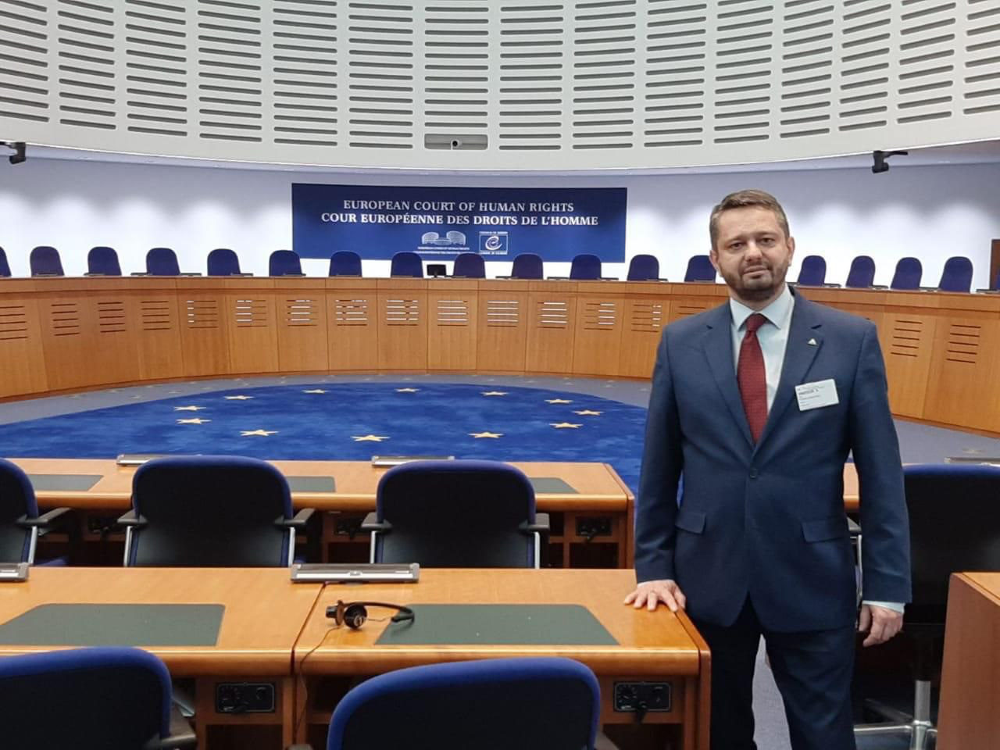

Как подготовиться к релокации в случае угрозы уголовного дела и задержания
Советы от особо разыскиваемого управляющего. Проверено на себе — в четырёх странах и двух розысках.
- 01
Сделайте два загранпаспорта для всех членов семьи — со сдвигом во времени начала и окончания действия.
- 02
По возможности оформите международные водительские права.
- 03
Получите свежую справку об отсутствии судимости. Берите её регулярно.
- 04
Заберите с собой все личные документы: права на все виды транспорта, свидетельства о рождении всех членов семьи, свидетельство о браке, дипломы, справку 2-НДФЛ. Сделайте их перевод с апостилем на английский или на язык страны, где у вас есть второй паспорт.
- 05
Не храните все эти документы дома — ни по месту прописки, ни по месту реального проживания (часто это два разных места).
- 06
Отсканируйте все необходимые документы и сохраните электронные копии на ноутбуке, в облаке или на частном сервере.
- 07
При покупке наличной или безналичной валюты берите справку о покупке. Происхождение валюты придётся доказывать. Происхождение доходов — отдельная тема.
- 08
Полечите зубы и пройдите медицинское обследование. Купите лекарства, которые принимаете регулярно: за границей другие правила их покупки.
- 09
Оформите карту иностранного банка. Или две.
- 10
Переоформите всё движимое имущество — машины, лодки, яхты, акции, доли в компаниях — на родственников или близких людей.
- 11
Сделайте генеральную доверенность от всех уезжающих на нескольких родственников или доверенных людей. Помимо стандартного набора (получение денег и документов) в ней должно быть право получать и восстанавливать SIM-карты на ваше имя, запрашивать и получать справки об отсутствии судимости, открывать и закрывать банковские карты. Срок действия — максимально возможный.
- 12
Копите подушку безопасности — в долларах, евро, криптовалюте, на счёте в иностранном банке.
- 13
Получите второе гражданство (второй паспорт).
- 14
Оформите шенгенскую визу, визу в США и в другую страну, куда можно выехать и попросить убежища (например, в Южную Корею).
- 15
Обязательно учите иностранный язык. Английский — универсальный. Если есть второй паспорт Испании или Аргентины — учите испанский. Если есть длительная виза во Францию (например, виза талантов) — французский.
- 16
Закройте в России ненужные карты и банковские счета.
- 17
Оставьте карты для онлайн-банкинга.
- 18
Заведите две-три электронные почты на доменах gmail.com и proton.me.
- 19
Договоритесь, чтобы кто-то проверял почтовый ящик по адресу прописки и пересылал вам письма. А также ходил на почту и по доверенности забирал письма с уведомлением и другую заказную корреспонденцию.
- 20
Договоритесь, чтобы кто-то присылал квитанции за квартиру или дом, консьержа — или платил за вас.
- 21
Личные машины продайте или сдайте в аренду, чтобы их не угнали, пока вас нет.
- 22
Наличные вывозите по частям и храните на счёте в банке, в банковской ячейке, в сейфе в вашей зарубежной квартире или у адвоката.
- 23
Если вы ожидаете проблем с Интерполом — заключите контракт с иностранным адвокатом.
- 24
Купите иностранный телефон с местной SIM-картой. Не ввозите его в Россию.
- 25
Запишите все пароли — к почтам, Госуслугам, картам, SIM-картам и всему остальному — на бумаге и в файле на сервере.
- 26
Соберите «тревожный чемоданчик»: бельё, носки, наличные, лекарства, зарядки, пауэрбанк, дорожный телефон (оформленный не на вас и выключенный до пересечения границы) — чтобы просто взять и уехать. Это должна быть ручная кладь, не багаж.
Отметки сохраняются только в вашем браузере и никуда не отправляются.